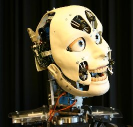

Hoy me gustaría escribir algo acerca de este apasionante tema multidisciplinario que involucra por supuesto a nuestra amada ciencia informática, haré un intento por plasmar una síntesis escueta y libre de aspectos técnicos. Procuraré contar de que va esto como una idea general.
Estuve un tiempo reflexionando acerca de por donde empezar y en factor de lo que me gustaría abordar, he decidido comenzar hablando acerca del Test de Turing ¿Qué es? ¿Quién lo creó? ¿Para qué sirve? ¿Con qué se come? Ahora mismo lo explico.
Test de Turing
Alan Mathison Turing, padre de la ciencia de la computación y la inteligencia artificial, hombre en honor al cual escribo estas lineas fue quien formuló el experimento que decidiría si una maquina puede ser considerada inteligente.
El test de Turing fue propuesto en un artículo científico llamado Computing Machinery and Intelligence, escrito por Alan Turing en 1950. Consiste en una prueba que una maquina a de tomar para demostrar su inteligencia, a inmensos rasgos claro, pero lo explico con más detalle luego de esta breve pausa para comentar sobre Sir Alan Turing.
Alan Mathison Turing
[Wikipedia] (23 de junio de 1912 en Maida Vale, Londres - 7 de junio de 1954 en Wilmslow, Cheshire) fue un matemático, lógico, científico de la computación, criptógrafo y filósofo inglés.
Es considerado uno de los padres de la Ciencia de la computación siendo el precursor de la informática moderna. Proporcionó una influyente formalización de los conceptos de algoritmo y computación: la máquina de Turing. Formuló su propia versión de la hoy ampliamente aceptada Tesis de Church-Turing, la cual postula que cualquier modelo computacional existente tiene las mismas capacidades algorítmicas, o un subconjunto, de las que tiene una máquina de Turing.
En su trabajo “Maquinaria de computación e inteligencia”, publicado en 1950, Turing decía que se podía enseñar a los ordenadores a pensar por sí mismos y generar pensamientos originales como lo hacemos los seres humanos. Para que esta inteligencia se pareciera a la humana, Turing proponía que se añadieran componentes aleatorios a los algoritmos. Tachó de sentimentalistas a los que negaban la posibilidad de máquinas inteligentes y trató las objeciones filosóficas como temas irrelevantes para conseguir este objetivo. ¿Pero cómo saber si se había logrado crear una máquina inteligente? Es por esto que ideó su famoso test, el cual calificaría a una maquina como inteligente o no.
En la prueba hay tres habitaciones aisladas con terminales para chatear. En una de ellas hay un humano que formulará preguntas, y en las restantes otro humano y una máquina, que las responderán.
El humano que formula las preguntas desconoce en que habitación está la máquina y en cual está el humano. Tiene que adivinar a partir de las respuestas en que habitación esta cada uno. Si el interrogador no consigue averiguar dónde se encuentra cada cual (con un indice de acierto superior al que se podría esperar por coincidencia), se considerará que la máquina es suficientemente inteligente como para hacerse pasar por un humano.
Parece perfecto, claramente si un humano no puede distinguir significaría que la maquina ciertamente es inteligente… O quizás solo aparenta serlo… Pues es aquí cuando llega otro personaje y refuta que hacerse pasar por inteligente NO es lo mismo que serlo.
John Searle
Este personaje inconforme con la idea de que una maquina fuera considerada inteligente por aparentar serlo, diseñó un experimento mental para refutarlo.
La habitación china
Consiste en una persona que no sabe nada sobre el idioma chino, encerrada en una habitación con unos manuales de reglas y símbolos para traducir bidireccionalmente dicho idioma. Fuera de la habitación alguien le entrega textos en papel escritos en chino, de forma que con la ayuda de los manuales los traduce y los responde, haciéndole creer a la persona de fuera que sí conoce el idioma chino. La idea que pretende transmitir Searle con este experimento es que la máquina realiza las cosas sin entender lo que hace, ni por qué lo hace, simplemente aplica unas reglas que alguien le ha puesto ahí de la misma forma en la que el sujeto al interior de la habitación no conoce el idioma ni entiende lo que hace, solamente sigue de forma mecánica las reglas proporcionadas para aparentar ese conocimiento.
En este punto llegamos a una bifurcación filosófica sobre la inteligencia artificial, esto es: la IA “fuerte” y la IA “débil”.
La IA fuerte, es la rama en la que se piensa que simular ser inteligente es lo mismo que serlo y por lo tanto una máquina puede ser igual de inteligente que un humano.
La IA débil, es la rama del pensamiento en la que personajes como Searle, consideran que conocer unas reglas y saber aplicarlas sin saber cuál es la razón de ello no es ser inteligente y por lo tanto la inteligencia de una máquina nunca podrá ser como la de un humano.
Todo esto nos conduce directo a un punto clave y la razón de la dicotomía entre la IA fuerte y la IA débil: El Pensamiento consiente.
En la actualidad la ciencia no comprende aún la conciencia o si esta es un compendio de muchas otras características de la psicología humana y no una sola por si misma, es precisamente esto lo que supone la diferencia irremediable entre una maquina y un humano.
Personalmente debo disidir de este razonamiento pues, incluso sin comprender la conciencia humana o su funcionamiento, no es difícil notar que los humanos llevamos a cabo muchas tareas de forma inconsciente y siguiendo reglas que no sabemos por que aplicamos, en ocasiones incluso podemos no ser conscientes de que estamos aplicando ciertas reglas.
De hecho, analicemos un poco esto: ¿Cuál es la diferencia entre tener los manuales sobre nuestro escritorio a tenerlos en nuestra cabeza?. Cuando aprendemos un idioma guardamos en nuestro cerebro todas la reglas necesarias para llevar a cabo conversiones lingüísticas y aún así no sabemos por que lo hacemos, ejemplo:
Nuestra lengua natal es el Castellano y deseamos decir “hola, como estas?” en Inglés. Aplicamos las reglas que conocemos hola = hi, como = how , estas = are; luego con un análisis sintáctico determinamos que nos referimos a una segunda persona (tu = you) y por lo tanto aplicamos una nueva regla y la conversión resulta en: “Hi, How are you?”.
Si bien he sobre simplificado esto, considero que la idea es clara. Una computadora pudo haber aplicado las reglas tal cual lo hicimos nosotros sin diferencia y por lo tanto no deja de ser una acción menos inteligente y asumimos entonces que ambos tipos de inteligencia tanto consiente como inconsciente son equivalentes en sentidos prácticos y los humanos usamos ambas.
Pero hay algo más interesante: Incluso esta diferencia podría no existir como nosotros la imaginamos, que tal si la consciencia misma es un gran y complejo algoritmo que nuestro cerebro (computadora de gran potencia me atrevo a decir) ejecuta mediante complicados procesos bioquímicos y eléctricos para formar la sensación de decisión y conciencia; después de todo el “yo” no es más que mi cerebro ejecutando procesos de gran complejidad para formar esa imagen mental misma de un “yo”.
Pues quizás llegue el momento en que terminemos de dividir la mente humana en una gran y fantástica colección de algoritmos computables y la computación cuántica nos dé la capacidad de ejecutar estos en tiempo razonable, quien sabe, quizás entonces tendremos mucho que celebrar, mucho de que admirarnos, y tal vez hasta mucho de que preocuparnos…
Visión Artificial
La visión artificial está ligada con la Inteligencia artificial ya que para recrear la visión necesitamos un dispositivo de captar la luz y generar una imagen a partir de esta, lo cual ya tenemos (cámaras), pero en la verdadera visión no basta con eso, más bien radica en la capacidad de procesar esta información visual para comprender, darle valor y convertirla en algo aprovechable y sobre todo dar a la maquina la capacidad de entender lo que ve, así que la visión ciertamente es un acto de inteligencia.
La visión requiere de una gran capacidad de procesamiento para filtrar y discernir la gran cantidad de información visual, por lo que no solo se necesita de una inteligencia que la use sino además de un “cerebro” muy potente para manejar los algoritmos necesarios.
Brindaré justo ahora una pequeña adehala necesaria y presentaré a una modelo de playboy:
Esta modelo llamada Lena Söderberg, cuya fotografía expongo aquí, se ha usado desde los años 70 para probar y aplicar algoritmos de computación gráfica convirtiéndose en un símbolo de esta ciencia.
La foto fue escaneada por Alexander Sawchuk, que necesitaba la fotografía de un rostro humano para exponer un artículo científico en una conferencia de algoritmos de computación gráfica y que lo único que tenia a la mano era la ultima publicación de la revista “playboy” que había llegado por correo a uno de los conserjes del centro de investigaciones.
Esta fotografía es especialmente útil debido al nivel de sombras y detalles que resultan perfectos para probar algoritmos.
Lena es una modelo sueca que apareció en la “playboy” del Noviembre de 1972 … Así que para estos días ya no luce como en la foto ;)
Por obvias razones la fotografía usada no fue exactamente esta, sino solamente un recorte más apto:
Voz Artificial
La voz artificial es básicamente software capaz de sintetizar voz parecida a la de los humanos luego de que la inteligencia artificial haya procesado lo que desea decir por supuesto.
Un popular ejemplo de software sintetizador de voz es “loquendo”, el problema con la creación de este tipo de software es la dificultad que representa crear una voz parecida a la humana o más difícil aun que esta pueda transmitir sentimientos o denotar estados de entonación lo bastante bien para sonar como un humano y no como un frío y árido robot de ciencia ficción.
La idea detrás de la generación de voz resulta bastante sencilla:
La voz humana funciona controlando el aire que expulsamos a través de la tráquea/Laringe para hacer vibrar nuestras cuerdas vocales y a la vez controlar su frecuencia de vibración, con lo cual producimos los sonidos que deseamos emitir. Por otro lado los parlantes de una computadora funcionan gracias a la correcta combinación de imanes y electro imanes que hacen vibrar un diafragma a la frecuencia que se le indique (por pulsos eléctricos) para producir sonido [simplificado].
De esta forma para emitir voz a través de transductores de sonido comunes basta con fijarse en las frecuencias y variaciones de la voz humana y pasar esa información en forma de pulsos eléctricos a los parlantes, así de sencillo… Bueno, no tanto.
A efectos prácticos lo más sencillo es traducir el mensaje a un texto en fonemas y generar la señal correcta para cada fonema procurando que el paso entre cada uno sea lo más suave y fluido posible para que la voz suene realista y no tan robótica, así toda esta información se convierte en pulsos eléctricos que a su vez se transformarán en voz en los parlantes.
Todo este procesamiento es bastante complejo, los mejores sintetizadores se han conseguido haciendo escáneres del tracto vocal a humanos.
Añadido a esto está la dificultad de imitar las emociones que transmitimos con la voz y darle la entonación adecuada al leer un texto, cosa que no se ha logrado aún, pero la ciencia trabaja activamente en ello.
Ejemplo de un par de piezas de software con este fin (GNU/Linux y Windows) son:
- festival (*nix)
- Loquendo (windows)
Son ejemplos de lo que se conoce como software TTS (Text To Speech), que realizan este tipo de tareas.
Stephen Hawking (ejemplo de uso de sintetizador de voz)
Audición Artificial
La audición artificial no tiene misterio si pensamos en esta como el inverso de la Voz artificial pues esta se basa en el mismo principio, aunque esta vez los impulsos eléctricos son generados por la vibración de la voz humana la cual mueve un diafragma (Micrófono) y estos impulsos deberán ser analizados por software e inteligencia artificial para interpretar y comprender la información recibida.
Aquí se presentan también inconvenientes muy similares al de la voz artificial ya que se debe procesar la voz con diferentes entonaciones, tonos, timbres provenientes de un humano.
Por ejemplo: un software de reconocimiento de voz deberá comprender la entonación del humano para saber si este está haciendo una afirmación o una pregunta.
Expongo también unos ejemplos de software con este fin:
- Sphinx 2 (*nix)
- Dragon Naturally Speaking (Windows)
Luego de haber leído todo esto, la imagen que tendrás en tu cabeza seguramente es algo así:
Y no estarías muy equivocado, si luego de dotar a una computadora de todas estas capacidades (principalmente pensar (IA)) y además le damos la capacidad de moverse estaremos cruzando al campo de la robótica.
Los robots al igual que muchas cosas se basan en la tecnología de la naturaleza para obtener resultados estupendos y existe dentro del estudio de la inteligencia artificial basada en la naturaleza algo conocido como inteligencia de enjambre en la que un comportamiento o algoritmo sencillo se convierte en un comportamiento de gran complejidad al interactuar con otros componentes iguales provocando una Inteligencia Colectiva compleja.
De igual forma dotar a una computadora de movimiento es un gran reto que se mejora cada vez con la observación de la naturaleza y se han logrado fabricar robots muy hábiles basados en la estructura física de animales de todo tipo, desde serpientes pasando por orugas hasta libélulas.
Con el tema de la robótica ya sobre la mesa resultaría falaz dejar pasar una teoría muy relevante que permite extender la mirada a los alcances y cierta forma a las consecuencias del avance de esta tecnología.
“El valle inexplicable” o “El valle inquietante”
Masahiro Mori (1927)
Es un Japones experto en ciencia robótica. En su teoría afirma que la respuesta emocional de un humano hacia un robot humanoide será empática y positiva conforme más se parezca a un humano, pero llegará un punto justo antes de que el parecido y los movimientos del robot sean casi totalmente humanos sin llegar a ser perfectos, en el que la respuesta será totalmente opuesta, es decir será más bien de repulsión.
Superado este “valle”, cuando el robot ya es indistinguible de un humano, la respuesta se vuelve tan empática como hacia cualquier otro humano.
La teoría se comprende con gran claridad es este gráfico:
Mori formuló esta teoría en 1970 y la explicación está ligada con los instintos que maneja nuestro cerebro, lo explico:
El cerebro humano esta “entrenado” de forma instintiva a rechazar y sentir repulsión o incluso miedo a aquellos humanos que perecen estar enfermos, mentalmente inestables, o con problemas que pudiesen causarnos daño o malestar (como la transmisión de enfermedades), así pues este es un mecanismo de defensa que aplica nuestro cerebro para mantenernos a salvo como individuos.
Lo que sucede en nuestro cerebro cuando vemos a un robot es muchas veces un proceso de humanización del objeto, empatía y hasta ternura pues vemos a un robot intentando parecerse a un humano. Sin embargo cuando un robot es muy parecido a un humano sin llegar a ser idéntico a uno de verdad, lo que vemos es a un humano con problemas, quizás con defectos o enfermo que induce a nuestro cerebro a aplicar mecanismos de defensa instintivos.
